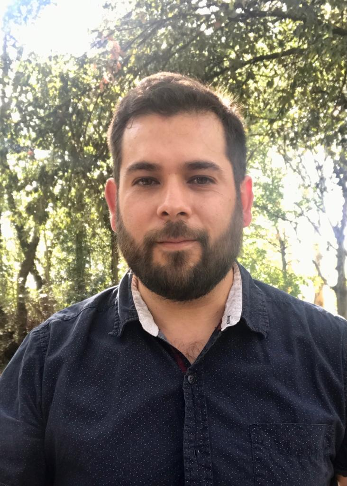

Marco Larrañaga
About me
I hold a Bachelor's degree in Oceanology from the Faculty of Marine Sciences at the Autonomous University of Baja California (Mexico), where I conducted research on the circulation patterns of Todos Santos Bay and their wind dependencies using high-frequency radars. I then earned a Master’s degree in Physical Oceanography at the Center for Scientific Research and Higher Education of Ensenada (Mexico), focusing on the impact of wave-current interactions on the dynamics of the Gulf of Tehuantepec during strong gap-wind conditions.
I completed my Ph.D. at the Laboratory of Geophysical and Spatial Oceanography Studies (LEGOS) in France, where I explored ocean-atmosphere interactions and their influence on the dynamics of the Gulf of Mexico. Afterward, I undertook a postdoctoral position at LEGOS, where I investigated the indirect feedbacks of mesoscale ocean eddies on the generation of sea surface waves, and evaluated the capabilities of the upcoming ODYSEA satellite mission in estimating surface currents, wind stress, and energy fluxes.
Currently, I am a postdoctoral researcher at the Center for Ocean-Atmospheric Prediction Studies (COAPS, United States of America), where my research focuses on the ocean dynamics of the Gulf of Mexico, with a particular interest in air-sea interactions and the factors leading to the separation of eddies from the Loop Current.
Research interests
I have a strong interest in the dynamics of (sub)mesoscale eddies, which play a crucial role in the ocean's circulation and energy distribution. These features, although often overlooked, significantly influence marine ecosystems and climate patterns. Understanding their formation, evolution, and interaction with other oceanic processes is central to my research, as these eddies are key to unraveling the complexities of the global ocean system. eddies are key to unraveling the complexities of the global ocean system.
Publications
In progress
-
Larrañaga M., Renault L., Peláez-Zapata D., Rascle N., Ocampo-Torres F., Osuna P., Aouf L.
Direct and indirect feedbacks from mesoscale eddies to the atmosphere and sea surface waves.
-
Ilkeyeong M., Larrañaga M., Chassignet E., and Bozec A.
Impact of bottom drag on Gulf of Mexico loop current eddy shedding.
-
Ahumada-Sempoal M., Larrañaga M., Santiago-García M., and Reyes-Hernández A.
Eddy-related mesoscale variability in the northeastern tropical Pacific.
Under review
-
Larrañaga M., Jouanno J., Renault L. Chassignet E., Durante G., and Sheinbaum J.
The role of cyclonic eddies in the detachment and separation of Loop Current eddies.
Published
-
Larrañaga M., Renault L., Wineteer A., Contreras M., Arbic B., Bourassa M., and Rodríguez E.
2025
Assessing the Future ODYSEA Satellite Mission for the Estimation of Ocean Surface Currents, Wind Stress, Energy Fluxes, and the Mechanical Coupling between the Ocean and the Atmosphere.
Remote Sensing
-
Durazo M., Flores-Vidal X., Castro R., Ocampo-Torres F., Saavedra J., Rodríguez-Padilla I., and Larrañaga M.
2024
Surface circulation in Todos Santos Bay, Baja California, México.
Continental Shelf Research
-
Larrañaga M., Osuna P, Esquivel-Trava B, Ocampo-Torres F., Rascle N., García-Nava H., and Moulin A.
2023
Comparing GlobCurrent dataset with numerical results from a high-resolution implementation of the POLCOMS-WAM coupled system under a strong gap wind over the Gulf of Tehuantepec.
Journal of Physical Oceanography
-
Larrañaga M., Renault L., and Jouanno J.
2022
Partial Control of the Gulf of Mexico Dynamics by the Current Feedback to the Atmosphere.
Journal of Physical Oceanography
-
Gorr-Posi E., García-Nava H., Larrañaga M. Jaramillo-Torres M., and Verduzco-Zapata M.
2021
Wave Energy Resource Harnessing Assessment in a Subtropical Coastal Region of the Pacific.
Journal of Marine Science and Engineering